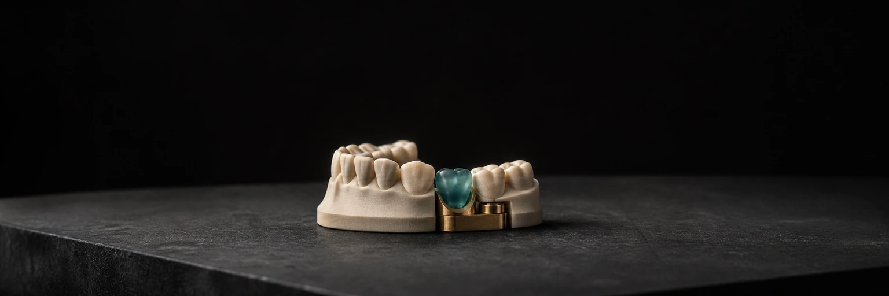

DentForma — Browser 3D Review
Точная 3D-правка становится контролируемым согласованием: ограниченные действия, приватный draft и неизменяемый результат вместо объяснений в мессенджере.

Контекст
Что это
DentForma — приватный browser-based workflow для согласования формы 3D-моделей. Техник создаёт кейс и загружает модели, назначенный участник показывает ограниченную правку в понятном редакторе, а завершение фиксирует отдельную неизменяемую revision для дальнейшей профессиональной работы.
Какую проблему решает
Слова, стрелки на скриншоте и голосовые сообщения плохо передают пространственное изменение. Версии смешиваются, непонятно, какая модель была исходной, кто изменил форму и какой результат действительно подтверждён.
Система
Технический стек
Архитектура
React/Vite UI отделён от imperative Three.js editor core. STL parsing и тяжёлая геометрия вынесены в Web Worker; typed contracts связывают UI с NestJS/Fastify API. PostgreSQL хранит кейсы и revisions, private S3/MinIO — модели, transactional outbox — уведомления. Reference остаётся неизменяемой, editable mesh изменяется детерминированно.
Почему именно так
Продукт намеренно не превращён в браузерный CAD. Ролевые границы и короткий набор операций снижают цену ошибки, worker защищает интерфейс от тяжёлого mesh-processing, а immutable submit отделяет черновое исследование от результата, который получает техник.
Карта системы
Доказательства
Сильные стороны
Сильная часть — не WebGL сам по себе, а управляемая цепочка ответственности вокруг геометрии: file preflight, semantic slots, scoped access, optimistic concurrency, draft, подтверждение и воспроизводимый export. Пользователь видит только действия, нужные для согласования.
Что это доказывает
Кейс доказывает способность собрать сложный продукт на пересечении 3D, full-stack, security и UX: от доменных ограничений и mesh lifecycle до private storage, operational runbooks и проверяемой release-процедуры.
Как обеспечивалось качество
Unit и integration-тесты проверяют mesh IO, редакторные инварианты, auth, quota, outbox и контракты. Playwright покрывает роли, редактор, retry, concurrency и security matrix; synthetic geometry исключает клиентские STL из test artifacts. Отдельно проверяются WebGL context restore, reduced motion и mobile fallback.
Полная матрица QA-доказательств →Границы
Engineering beta готова для контролируемого pilot, но это не медицинское изделие, не диагностический инструмент, не сертифицированный публичный SaaS и не обещание клинического результата. Публичная визитка не раскрывает реальные STL, пациента, клиента, storage topology, credentials или private source; shared environment требует закрытия legal, TLS, provider и operational gates.
Нужен похожий продукт?
Соберу под ключ — от архитектуры до деплоя и QA. Отвечу с оценкой за 24 часа.